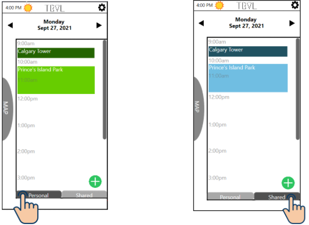

-
Student Scholarship System

A group project for SENG300 (Introduction to Software Engineering), a course that focused on the software lifecycle. We used HTML, CSS, and JavaScript (along with Node.js) to create a functional scholarship website.
-
Itinerary App
My group project for CPSC481 (Human-Computer Interaction), a course that focuses on UI/UX designing and its principles. We designed an itinerary app for Calgary through WPF to present our prototypes.